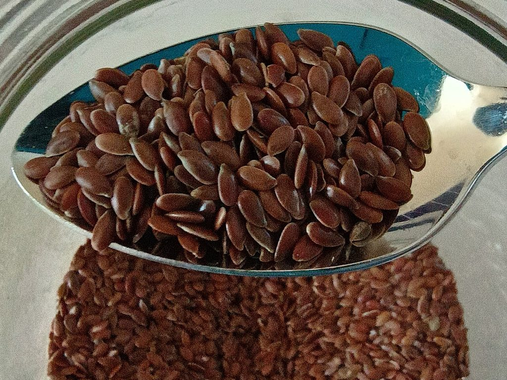

Cikk · Lenmag
Lenmag: a reggelidbe jó, de fogyókúrás csodát ne várj tőle
Biztos láttad már: egy kanál lenmag a joghurtban, a zabkásában, a kenyérben. Én is szórok belőle reggelente, mert olcsó, és azt hallottam, hogy jót tesz a szívnek és a fogyásnak. Most utánanéztem, mit mond erről a kutatás. A rövid válasz: ételnek nyugodtan, de ne várj tőle csodát, és van pár dolog, amire figyelned kell.

Honnan jön, és mire árulják?
A lent eredetileg a Közel-Kelet környékén termesztették. Az ókori Egyiptomban vásznat szőttek belőle, Etiópiában ételbe tették, az ókori görögök hashajtónak használták. Észak-Amerikában az európai telepesek borogatást készítettek belőle vágásra, égésre, az olajából pedig festék lett.
Ma a lenmagot és a lenmagolajat a szívre, az agyra és az immunrendszerre ajánlják. A legtöbb ilyen termékben alfa-linolénsav (ALA) van, ez egy növényi omega-3 zsírsav. Átolvastam az amerikai NIH komplementer és integratív egészségügyi központjának (NCCIH) lenmagról szóló lapját, amelyet 2025 februárjában frissítettek.
Mit mond a NIH?
Amit a lap ír A lenmagot több egészségügyi célra is vizsgálták, de a kutatások minősége vegyes. Egy vizsgálat szerint a vízzel elkevert lenmag-nyálkapor talán segíthet fogyni túlsúlyos felnőtteknél. A lenmag-lignán kivonat és a lenmagolaj kapszula viszont a fogyásban nem tűnik hasznosnak.
Amire kevés az adat Terhességi cukorbetegségben néhány kutatás szerint az ALA-t tartalmazó lenmagolaj javíthatja az éhgyomri értékeket és az inzulinrezisztenciát. 2-es típusú cukorbetegségben még nem tudni, segít-e a vércukron a lignán kivonat, és más cukorbetegeknél sem világos a haszna.
Amire figyelj
Nyers vagy éretlen lenmagot ne egyél, mert a NIH szerint mérgező anyagok lehetnek benne. Kisebb mennyiségben, rövid ideig, nagyjából fél évig a lenmag és a lenmagolaj valószínűleg biztonságos. Nagyobb adagtól puffadhatsz, teltségérzeted lehet, vagy hasmenést kaphatsz.
Ha vérhígítót vagy más gyógyszert szedsz, előbb beszélj az orvosoddal vagy a gyógyszerészeddel, mert elméletileg a lenmag kölcsönhatásba léphet velük. Terhesség alatt néhány kutatás szerint a lenmag talán nem biztonságos, bár ez nem biztos, szoptatás alatt pedig keveset tudunk róla.
Szerintem a reggeli kásádba nyugodtan szórj egy kanállal, ha ízlik. De ha fogyni szeretnél, vagy a vércukrod miatt aggódsz, ne a kapszulától várd a megoldást, hanem beszéld meg az orvosoddal.
Források
- National Center for Complementary and Integrative Health, NIH. Flaxseed and Flaxseed Oil. Frissítve: 2025. február. https://www.nccih.nih.gov/health/flaxseed-and-flaxseed-oil
- Fazeli Moghadam E, Khaghani L, Shekarchizadeh-Esfahani P. Flaxseed Lowers Blood Pressure in Hypertensive Subjects: A Meta-Analysis of Randomized Controlled Trials. Clin Nutr Res. 2024;13(4):295-306. https://doi.org/10.7762/cnr.2024.13.4.295 · PubMed 39526211